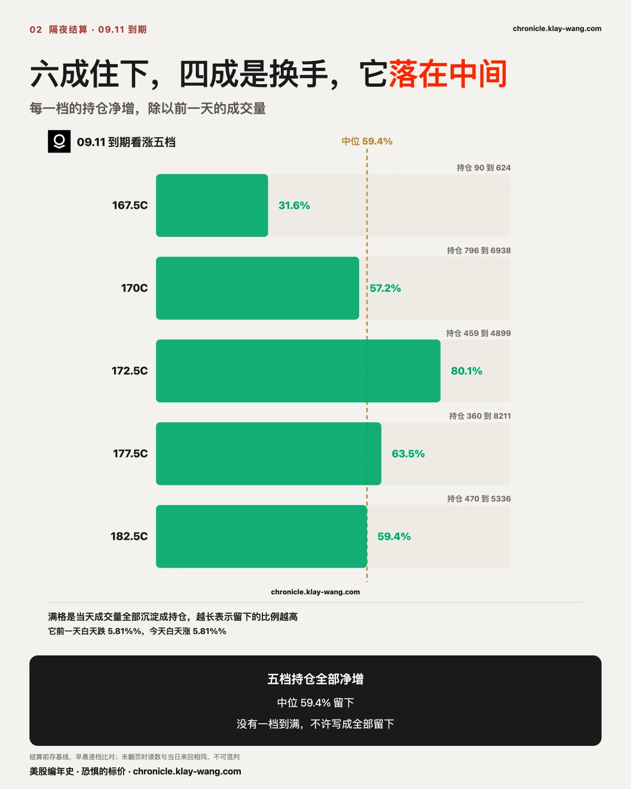
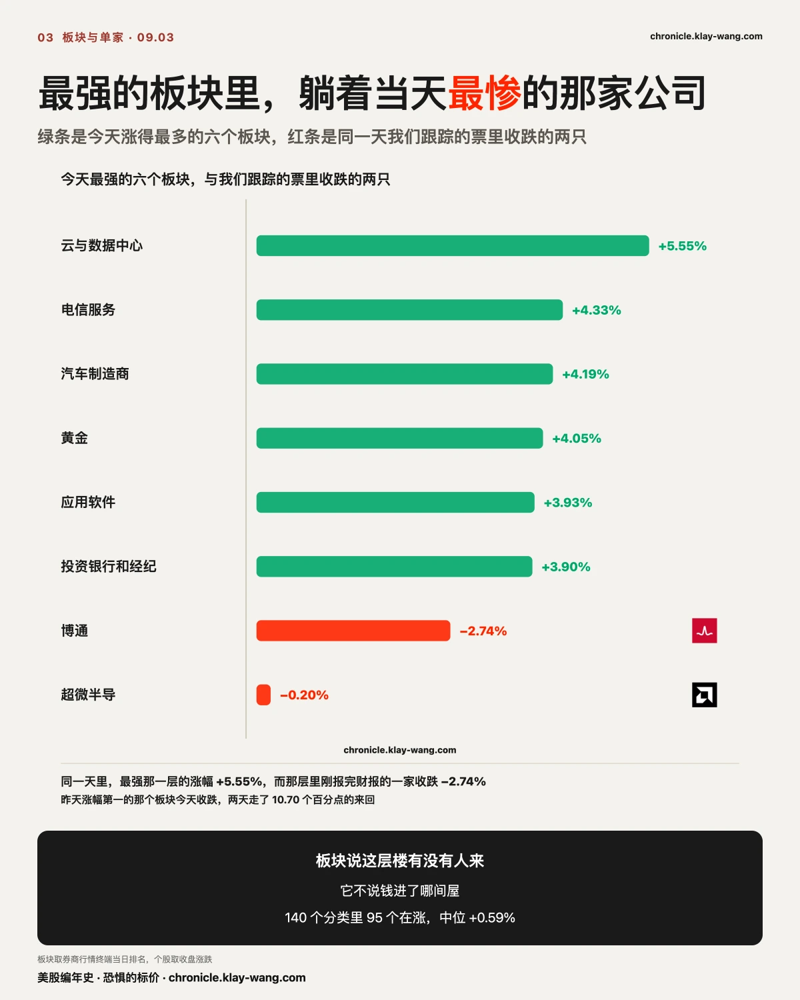
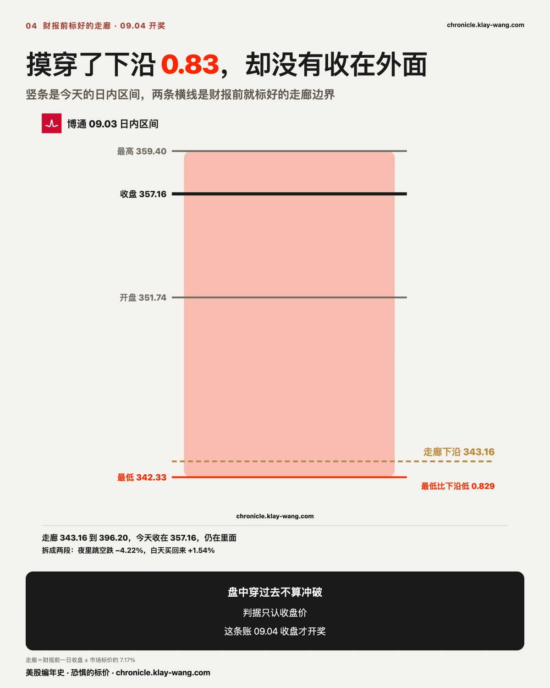
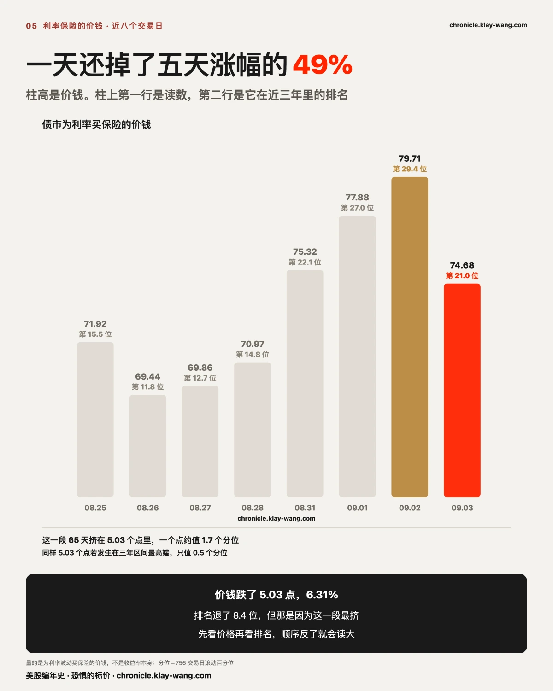
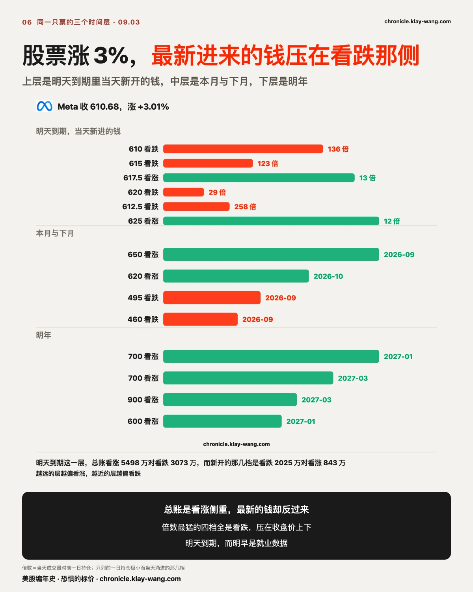
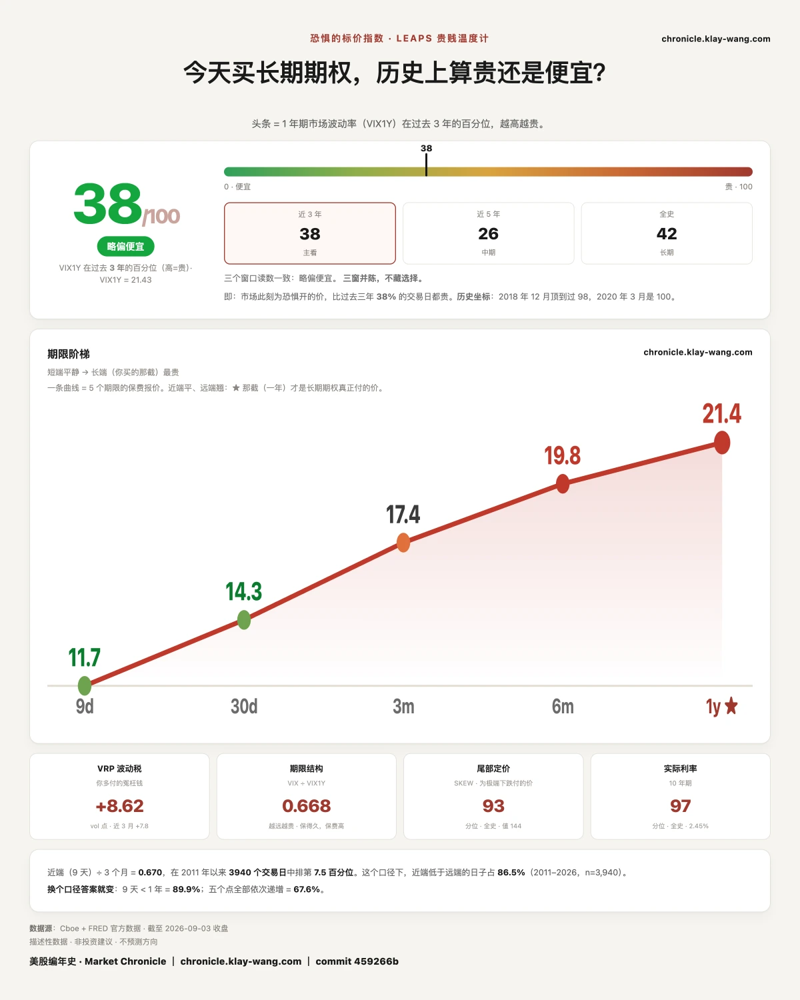

债市保险降温？ 特斯拉行情启动？ 之前我们都写过了 · 8.31-9.4
三行干货：那九档八档已经挣回成本，而债市的保险却在降价
一，08.27 我们记下特斯拉 09.04 到期的九个行权价，当天它收 354.81。今天它收 376.37，九档里八档的实打实价值已经超过当初付的钱。明天到期。
二，09.02 那批 Palantir 看涨新仓今晨结算，五档持仓全部净增，中位六成留下。成交量只能提问，隔夜持仓才回答。
三，债市那把尺连涨五天后今天掉头，一天跌 6.31%，还掉了那五天涨幅的一半。先看价格再看排名，反过来就会把普通回落读成大事。

〔提前量〕08.27 那张表上的九档，今天八档已经把成本挣回来了
08.27，我们记下九个价位。
那天特斯拉收 354.81。我们在异动表里记下九个行权价：345、350、352.5、355、357.5、360、370、372.5、375，到期日都是 09.04。
这九个里有六个高于 354.81。买这六个的人，等于在押一周之后特斯拉要涨到那个价位以上，涨不上去就一分不剩。我们记下它们的理由只有一个：这几个价位当天的成交量异常大，372.5 那个是前一天存货的 19.77 倍。
09.01，我们在推送里写了这一档一共押了 1.015 亿。
那天它收 356.09。押 09.04 到期的钱一共 1.015 亿美元，其中押跌的 5559 万，押涨的 4586 万。
押跌的钱比押涨的多。这一天，赌这个星期五的钱是偏在下跌那一侧的。
09.02，同一个到期日的钱一天之内多了一倍半，还换了一侧。
那天它收 357.01。同一个 09.04，钱从 1.015 亿涨到 2.558 亿，其中押涨的 1.634 亿，押跌的 9235 万。
一天之内多进来 1.5 亿，而且从偏向下跌翻成偏向上涨。当时我们写的原话是，昨天的钱买的是 09.02 那一天，今天的钱买的是发布会之后那一段。
09.03，也就是今天，它收 376.37，涨 5.42%。
对账。 一张合约当天的成交价乘一百，是当初付出去的钱；今天收盘价减行权价再乘一百，是这张合约现在实打实值多少。
08.27 那九档：八档现在的实打实价值已经超过当初付的钱。 345 那档当初每张付 1432 美元，现在值 3137；350 付 1113，现在值 2637；370 付 325，现在值 637。只有最高的 375 那档，现在的价值比当初付的钱少 92 美元。
09.02 记的十六档，十四档已经覆盖成本；09.01 记的十四档覆盖了九档，380 以上的五档到今天还是零。
明天就是那个星期五。 这批合约 09.04 到期，也就是明天。到期那天时间价值归零，只剩收盘价减行权价那一块。今天在价内的，明天掉回去一样归零。
三条边界。
一，价内不等于赚钱。 上面算的实打实价值是到期时的最低价值，不是现在的市场价。真赚没赚，要拿今天的市场价减当初的成本。
二，当初付多少决定一切。 同一天，345 那档付 1432、375 那档付 229，涨同样的幅度，两边结果完全不同。买得贵的需要涨得更多才回本。
三，还要看保险本身贵不贵，也就是波动率。 这批买在 08.27，那天特斯拉三十天的保险价钱是 40.09，处在它自己一年里的第 8 位，很便宜，所以波动率没有吃掉它们。但反过来的情况更常见：买在事件前保险最贵的时候，哪怕方向猜对、合约进了价内，波动率一塌，买方照样可能亏钱。方向对了不等于钱赚了，中间隔着一个成本。
我们不给方向，也不替谁做决定。我们记的是有人在付钱、付了多少、押在哪一天。对不对得上，你自己翻回去看。

〔开奖〕昨天涌进来的那笔钱，六成留在了账上
成交量是这一天里换手了多少张合约，持仓量是收盘之后还有多少张没平掉、还挂在账上。前者是流水，后者是存货。
09.02 那天 Palantir 白天跌 5.81%。同一天，押它九天后（09.11 到期）看涨那一侧的五个价位被大量买卖，每个价位当天的成交量，都是前一天存货的十几倍到三十几倍。
这种倍数当天判断不了。开仓当天就平掉，和真开了新仓留在牌桌上，收盘时读数一模一样。分开它们的只有第二天早晨结算后的存货数字。
今晨结算出来了：五个价位的存货全部增加。 把每个价位增加的存货除以前一天的成交量，得到留下的比例：31.6%、57.2%、80.1%、63.5%、59.4%。
六成留下，四成只是当天来回。不是全走了，也不是全留下，它落在中间，我们就照中间写。
今天它收 182.53，涨 7.71%。拆开看更有意思：夜里跳空只贡献 1.79%，白天买上去的是 5.81%。而 09.02 它全天正好跌 5.81%。同一个数字，两天各走了一个方向。

〔分家〕最强的板块里，躺着当天最惨的那家公司
今天领涨全场的是云和数据中心，涨 5.55%。上一期正文点名的正是这一层，原话是昨天挨打的今天全弹了，只有算力那层没弹。它今天弹了，两天之间挪了 7.60 个百分点。
但把镜头从板块拉到公司，画面反过来。同一层里，刚报完财报的博通收跌 2.74%，是我们 21 只里唯二收跌的一只。
板块指数说的是这层楼今天有没有人来，它不说钱进了哪间屋。 140 个分类里 95 个在涨，中位 0.60%；同一天里，买对楼层买错屋子的人没赚到。
掉头也一样干净：昨天涨幅第一的海运港口今天跌 2.00%，两天之间走了 10.70 个百分点的来回。

〔围栏〕博通摸穿了自己财报前标的底线，却没有收在外面
财报公布之前，期权市场给这只票标了一个价：财报当晚最可能的波动幅度是上下 7.17%。 这个数从当时期权的实际报价倒算出来，买保险的人愿意付多少钱，就等于市场认为要动多大。把这个幅度套在财报前一天的收盘价上，得到一条从 343.16 到 396.20 的走廊。走廊之内，等于事情在市场事先标好的范围里；走出去，等于市场标少了。
今天它开在 351.74，最低到 342.331，比走廊下沿低 0.829 美元，收在 357.16，回到走廊里面。拆成两段：夜里跳空跌 4.22%，白天买回来 1.54%。
这一趟不算冲破。 判据只认收盘价，而且这条账的开奖日是 09.04。今天能记的只有一件事：一条在财报之前就标好的边界，盘中被摸穿一次又被收回去。

〔债市〕它一天还掉了五天涨幅的一半，但别把分位当成幅度
昨天我们写的是，加息的故事讲到第三天，为乱付钱的人还是没出现。那把量利率保险的尺当时连涨第五天，读数 79.71。
今天它掉头，读数 74.68，一天跌 5.03 点，跌幅 6.31%。 那五天一共涨了 10.27 点，今天一天还掉了其中的 49%。
它同时从近三年第 29.4 位退到第 21.0 位，退了 8.4 个分位。分位和幅度是两回事。 74.68 到 79.71 这 5.03 个点的区间里，三年 756 个交易日挤着 65 天，占全窗口的 8.6%。这一段里一个点大约值 1.7 个分位。同样 5.03 个点如果发生在三年区间的最高端，只值 0.5 个分位。
所以正确的读法是：价格跌了 6.31%，这是事实；排名退了 8.4 位，这是因为它正好待在分布最挤的那一段。 先看价格，再看排名，顺序反过来就会把一次普通的回落读成大事。
这把尺量的是为利率波动买保险的价钱，不是收益率本身。 十年期收益率的水平我们没有自己的逐日序列，所以不在这里给数；我们手上有逐日序列的是长中短三档国债基金，今天它们分别涨 0.15%、0.30%、0.10%，越长端涨得越多。
还有一条挂了两期的账今天动了。08.31 我们记下三十天与一年期的分岔，当时二十一只里三十天涨十八只、一年期只涨十只。今天反过来：三十天涨十一只，一年期涨十三只。 当初写下的判据是，一年期涨价只数若反超三十天，则那次分岔属于事件驱动的临时现象。今天触发了，那条读法按判据收回。

〔反常〕它今天涨 3%，可最新进来的钱压在看跌那一侧
这家公司 09.02 发布了新一代人工智能模型，今天涨 3.01% 收在 610.68。没有坏消息。
把它的期权拆成三层，形状不对劲。
第一层，明天到期的。 整体账面是看涨那侧钱更多，5500 万对 3070 万。可要是只挑出当天新开的那几个价位，方向立刻反过来：成交量对前一日存货倍数最高的四个，全是看跌，而且行权价就压在今天收盘价的上下。612.5 那档昨天存货只有 25 张，今天涌进来的量是它的 258 倍；610 那档 136 倍；615 那档 123 倍。
第二层，本月与下月。 最大的一笔在 09.18 到期的 650 看涨，8198 张；也有 495 和 460 的看跌。
第三层，明年。 全部是看涨，而且行权价越来越高：2027 年 1 月的 700、3 月的 700 与 900。
三层摆在一起，形状是：越远的层越偏看涨，越近的层越偏看跌。
只说能量到的部分。明天早晨是就业数据，而那批贴着现价的看跌，到期日正好盖住它。 一个愿意为明天买保险的人，和一个认为这家公司明年值 900 的人，可以是同一个人，也可以是完全不同的两群人。权利金只告诉你钱压在哪一侧，它不告诉你这些人赌的是什么。 每一张合约都有买方和卖方，看跌那侧钱多，可能是有人买保护，也可能是有人在卖保护收钱。
能确定的只有一件：在一个没有坏消息、股价上涨 3% 的日子里，明天到期的看跌侧涌进了几十到两百多倍于昨日存货的新量。
这对你手里的票意味着什么
大盘 ETF：140 个分类里 95 个在涨，中位 0.60%，但小盘指数只涨 0.40%。宽度不错，涨的是大的那一头。
特斯拉：今天收盘价里不含今晚的发布会，它在收盘之后才开始。押在 09.04 的那一档明天到期，赢的是收盘价所在那一半。
博通：走廊 343.16 到 396.20，09.04 收盘落在内外，是这条账的对账日。
Palantir：09.02 进的那批新仓六成住下，窗口只到 09.11。
存储两只：在一个 19 涨 2 跌的日子里只涨 0.22% 和 0.10%。不动就是一个读数。
含义摆全，怎么动是每个人自己的账。
今天值得带走的三句话
一，成交量的倍数只能提问，隔夜持仓才回答。 三十倍成交和当天开了又平，收盘时长得一模一样。
二，记异动记的是有人在付钱。 08.27 那九档被记下来的理由是成交倍数，与方向无关。
三，板块指数说的是这层楼有没有人来，不说钱进了哪间屋。 最强的板块里可以躺着当天最惨的公司。
下一期回访：两笔账 09.04 收盘开奖
博通那条走廊 343.16 到 396.20，只认收盘价。特斯拉 09.04 那档，看涨 1.634 亿对看跌 9230 万，赢的是收盘价所在那一半。
〔温度计〕明天是非农，而近端的保险今天全线降价，只有一年期在涨
还有一把尺量的是股票市场为未来一年买保险的价钱。今天它给出 38.1，昨天是 35.8。
先看价格再看排名，这条今天在债市那一节刚用过，这里同样适用。一年期波动率从 21.24 抬到 21.43，只动了 0.19，排名却挪了 2.3 位。 又是同一个机制：它落在分布很密的一段，排名的跳动比价钱的跳动大得多。
五档期限今天的形状才是重点。九天从 12.57 落到 11.68，三十天从 15.20 落到 14.32，三个月从 17.73 落到 17.42，六个月从 20.36 落到 19.78。近端四档全线降价，唯独一年期从 21.24 抬到 21.43，是五档里唯一涨价的一档。
明天早晨是非农。市场没有为明天加价，它给一年之后加了价。 最近那一档降得最多，一天掉 0.89；最远那一档反而是唯一被抬起来的。为明天付钱的人在减少，为一年后付钱的人在增加。
把两把尺摆在一起：债市那把今天降价 6.31%，股市这把近端降价、远端涨价。两个市场对明天的看法一致，对一年之后的看法不一致。

恐惧的标价指数（Fear-Price Index）· 2026-09-03 · 读数 38.1/100：一年期波动率 VIX1Y 为 21.43，
处于近三年第 38.1 百分位，高即贵。逐日台账与口径 → chronicle.klay-wang.com · 转载注明：恐惧的标价指数 · Market Chronicle
期权异动与个股逐日 → chronicle.klay-wang.com/options
温度计读数与两本台账 → chronicle.klay-wang.com
本站不提供投资建议，不预测方向，不做择时。